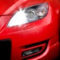

Бортжурнал
ДЖЕРЕМИ КЛАРКСОН: ПОЛИРОЛЬ - ПРОШЛЫЙ ВЕК. НАСТАЛА ЭРА ЖИДКИХ СТЕКОЛ!
Извечная проблема автомобилистов относительно сохранения чистоты своей машины решена. Наука не стоит на месте, и в настоящее время найден проверенный способ, как в прямом смысле слова “защитить” автомобиль от грязи. Подробно этом изобретении рассказывает ведущий шоу “Top Gear” и “The Grand Tour” Джереми Кларксон.
- Если вы заботитесь о внешнем виде своей тачки, то советую вам обратить внимание на опыт жителей Японии. Несмотря на специфический климат и отнюдь не опрятные дорожные полотна, эти хитрые азиаты научились сохранять чистоту своих автомобилей. Их машины просто блестят и светятся, причем круглый год! Думаете, что у них есть особая схема мытья или волшебная полироль? Почти угадали. Все дело - в жидком стекле.
Жидкое стекло под названием Silane Guard - революционный продукт известного японского бренда Willson. До сего момента компания предлагала своим клиентам различные очистители, шампуни и принадлежности для мойки, но теперь они совершили огромный прыжок вперед. Их “защитник” - настоящий нонсенс. По сути это та же полироль, но совсем другого качества: диоксид кремния и качественный полимер в ее составе реально способны придать автомобилю неповторимый блеск, а также защитить его от любого внешнего воздействия климата.
- Одного нанесения достаточно для того, чтобы обеспечить автомобилю великолепный внешний вид на длительный срок, вплоть до одного года. И это не просто слова - это японское качество. Подумайте сами - уже на старте продаж в США и России производитель был вынужден запускать четыре дополнительные линии, чтобы жидкого стекла хватило всем желающим. И почему такой ажиотаж? Все просто - эта штука реально работает.
- При попадании на поверхность кузова Silane Guard образует плотную молекулярную пленку, которая способна устранить потускнения и мелкие царапины, придать автомобилю великолепный блеск и защитить его от внешнего воздействия окружающей среды. Говоря простым языком - вы просто как следует натираете свою тачку и радуйтесь жизни. Ни дождь, ни грязь не оставят ни единого развода на кузове вашего авто. И самое главное: жидкое стекло подойдет к любому виду лакокрасочного покрытия. А нанести его сможет даже, простите, человек с одной рукой.
Итак, друзья, если вы хотите, чтоб ваша тачка сияла, выбросите свою полироль к чертям. Жидкое стекло - мой совет всем автомобилистам. Правда, есть один небольшой минус - ваш автомобиль будет приковывать повышенное внимание своим невероятным блеском.
В заключение добавим, что в России продажа жидкого стекла Silane Guard осуществляется на официальном сайте компании-представителя. Желаем вам чистых автомобилей!
Я езжу на Skoda Octavia Geschenke des Schicksals (до этого — Toyota Carina E и Opel Corsa)
Россия, Ульяновск
Потрясный мужик! Жалко, что “Топ гир” закрыли с ним. Самая веселая передача на ТВ была.
Я езжу на Subaru Impreza WRX Лиса (до этого — Nissan Skyline, Subaru B4, Honda Civic и Honda Accord Euro R)
Россия, Томск
Его купили что ли, Silane Guard рекламирует теперь )))
Ну ему вот делать нечего, как всякие средства рекламировать. Просто советом поделился. Тем более, что это жидкое стекло в рекламе не нуждается - у нас весь город от него на ушах стоит. Я уже и сам заказал, не удержался )

А я уже попробовал эту штуку. Тачку теперь реально не узнать - выглядит, как новая. На водоотталкивающий эффект пока не тестировал - погода сухая стоит. Но пыль и грязь не оседают, это факт.
Россия, Курск
Вот только вчера про это стекло на “Авто плюс” смотрел. Тестировали Хонду - полировали с Silane Guard и отправляли гонять по грязным лужам. Тачка реально выходила сухой из воды. Японцы и вправду шарят.
Я езжу на BMW *-:бмв-шечка:-* (до этого — Hyundai Accent и Mazda 323)
Россия, Москва
Тоже есть опыт использования жидкого стекла. Пежик просто сияет :)

Мужики, а как долго доставка идет? Страсть как хочу это жидкое стекло попробовать. А месяц ждать не хочется…

Я езжу на Citroen C4 красная панорама, АТ и Opel Meriva 1.4 MT для родителей (до этого — Mazda 323)
Россия, Московская область, Коломна
Месяц ждать и не надо, ты там с Китая собрался заказывать что ли?) Покупай на официальном сайте компании, там тебе максимум за неделю привезут. Мне на четвертый день уже пришла. Вещь, конечно, крутая!